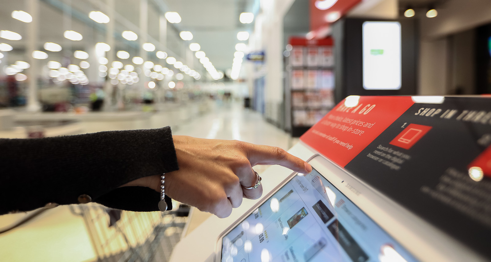

Sainsbury's Argos
Design and Team Leadership: Jan 2019 - Today
Reorganised, led, and coach
a team of multi-disciplined creative professionals including Information Architecture, Product Design, Customer Research, and UX Writing.Enriching
a strong technology-based culture by injecting a more user-centered and problem-solving mindset and process.Defined and executing
the user experience vision, strategy, team's code of conduct, user-centered design direction and guidelines.Work closely
with brand, CRM and relevant teams to help ensure consistent tone of voice and appropriate design across all digital customer channels.Identify and drive
emerging digital initiatives associated with usability, accessibility and design.Liaise
with designers, developers and product owners to implement new conceptual ideas.Sainsbury's Argos is a leading UK-based online retailer; with 29 million store customers and nearly a billion online visitors every year (in terms of size, only Ebay and Amazon are bigger), we’re helping make our customers’ lives easier.
As Head of UX and Product Design, I am leading the User Experience, Product Design, UX Research, and UX Writing for the teams that work with engineering to create user-centred digital experiences across mobile, desktop, application, in-store and new channels as they emerge in Argos, Argos Financial Services, Tu Clothing, and Habitat.

My Story
After nine years, I decided to leave Ocado.
I had the absolute privilege of working on ocado.com, fetch.co.uk, sizzle.co.uk, fabled.co.uk, and lastly on the Ocado Smart Platform. It was time for me to move on to something different, something that could teach me new things and enrich my life and professional experience.
I joined Sainsbury's Argos as their new Head of UX and Product Design. [Spoiler] Unfortunately, my experience did not last long; I will leave the business after only ten months.
From the first day, I could clearly recognise the weak disposition and significant challenges the UX team members were facing. Not having anyone to lead the team for more than a year impacted negatively on the designers' growth, influence, and craft. The designers felt disengaged and demotivated, and one by one were leaving the business. Team spirit and comradery were nonexistent, and as a consequence, personal conflicts started to arise.
They all were good individuals and valid designers, so my first and only priority was to bring back enthusiasm and teamwork. I spent most of my first months engaging with the team in a group and individually.
Because of the current situation, I immediately defined caring and learning as the new two critical team values.
I measured success by how much designers contributed to the success of their peers.
I physically reunited the team from being spread out across cross-functioning squads to sitting next to each other. To be a capable and efficient designer, you need to learn to work well and collaborate with your fellow designers; otherwise, we'll end up having a toxic culture of competitive silos. The plan was to investigate other ways of working (back to cross-functioning teams?) after we succeeded in becoming one lovely and cohesive team.
I planned team time. We would spend every Friday afternoon in training (design workshops) or in social events, such as visiting art museums and pubs. A few disagreed with spending that time in not doing "work", but as I said earlier, no teamwork = not great work (especially in the long term). I didn't compromise; that time was the most crucial time of the week.
I ran Design Thinking workshops across the organisation to divulge the meaning and value of design. I engaged with other leaders from different areas of the business such as Brand, Marketing, and Technology so to build a stronger relationship of trust and collaboration.
I started building a bridge between our team and the Sainsburys Experience team to open opportunities for learning and working together.
I loved my first three/four months. The feeling I got when people privately told me how much better the team was doing was pure happiness. The feeling I got when the designers share their recent success's story with sincere excitement, is what makes me love my job. After four months, we started to see some real progress.
The team was more united than ever, and optimism started floating in the air.
It was time to start facing the fact that we needed to scale and deliver more significant design outcomes. We should never forget that our mission is to provide significant and valuable work for our customers and business. With the intent to optimise design delivery and consistency, I started defining a strategy to improve and scale our Design System (Bolt). We developed a new design process to facilitate collaboration and business/user validation; I started exploring new design opportunities to optimise the overall Sainsburys Argos experience.
Everything was going according to plan. Then, one rainy day in May, an announcement was made. The whole digital team of Sainsburys Argos was going to merge with Sainsbury's Food to become the one digital Sainsbury's team. And it needed to happen fast (rumours might say that it was a response to the failed merger between Sainsbury's and Asda).
I had to pause my initiatives to participate in the new Organisational Design workshops. While interacting with the Product and Tech Sainsbury's management, I realised that significant changes were ahead of us; changes that I struggled to be excited about.
One after the other, my line managers resigned; and It became clear to me that, regardless of my efforts, I couldn't shape the new UX team as desired. Sainsbury's is a too big ship to steer in a new direction.
My leadership values, mindset, and vision were not compatible with what Sainsbury's expected. To avoid any further and future disruption, I decided to resign before the new Experience team structure was made public. It was a choice made by gut feeling, intuition, and heart.
If there is something that my life taught me is that regardless of tough choices, everything is going to be just fine.
I wished I had more time to observe and enjoy the growth of the UX team and being able to deliver a better craft and experience to our millions of customers.
So here I am now, with three months to find a new job.